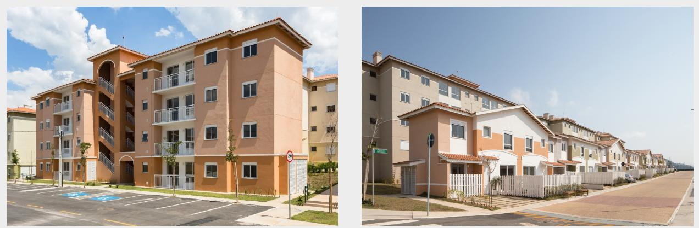
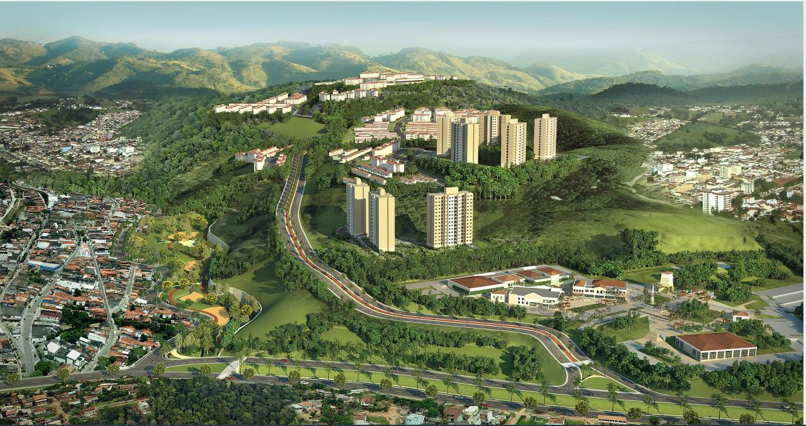
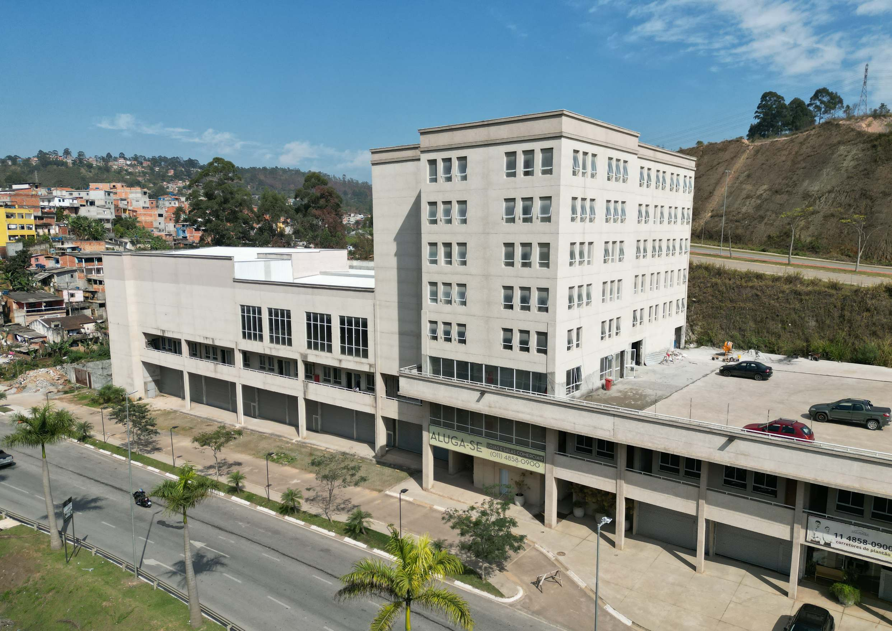

Condomínio Pássaros
O residencial faz parte da história e da ocupação planejada do empreendimento.

UM BAIRRO. NOVAS POSSIBILIDADES.
Moradia, natureza e convivência em uma visão integrada de bairro.
Descubra o projeto ↓ESSÊNCIA VILA PARQUE
Um projeto urbano que aproxima pessoas, espaços e novas possibilidades.
O Vila Parque reúne projetos residenciais, clube de moradores e centro comercial. Uma trajetória de transformação que também contempla moradias, educação e a revitalização da Estrada Tenente Marques.
Conheça os espaços ↗UM BAIRRO EM MOVIMENTO
Projetos apresentados como implantados
no material institucional.

O residencial faz parte da história e da ocupação planejada do empreendimento.

Um espaço de encontro que integra a proposta de convivência do bairro.

Comércio como parte de um bairro que reúne diferentes usos e atividades.
VILA PARQUE · MALL & OFFICE
Um centro comercial integrado à vida do bairro,
em Santana de Parnaíba.

ESPAÇOS PARA NOVAS IDEIAS
O Mall e o Office Center reúnem espaços comerciais e salas em um empreendimento que conecta trabalho, compras e convivência.
Quantidades informadas na ficha técnica do BOOK. Consulte a apresentação para conferir plantas e áreas de cada unidade.
SANTANA DE PARNAÍBA · SP
Na Zona Oeste da Região Metropolitana de São Paulo, próximo a Barueri, Osasco, Alphaville e Tamboré. A região se conecta à capital e ao interior pelas rodovias Castelo Branco e Anhanguera.
Estrada Tenente Marques, 4.900
CONHEÇA OS ESPAÇOS
Explore as plantas originais. As dimensões e observações técnicas estão preservadas nas imagens e no BOOK Mall & Office.
Material de apresentação. Disponibilidade, áreas e condições comerciais devem ser confirmadas com o responsável pelo empreendimento.
UM OLHAR PARA O AMANHÃ
O master plan apresentado prevê um bairro para 3.000 famílias, com condomínios verticais e horizontais, áreas públicas, clube e centro comercial.
A proposta também inclui a recuperação de áreas verdes com a criação de um parque linear.
Visão de projeto conforme apresentação institucional. Não representa anúncio de lançamento ou disponibilidade de unidades.HISTÓRIA E TRANSFORMAÇÃO
O material informa que o loteamento residencial foi aprovado em 1973 pela Companhia de Indústria, Comércio de Materiais e Agricultura — CICMA, com referência ao Decreto-Lei nº 58 de 10 de dezembro de 1973.
Segundo a apresentação, o Grupo RZK adquiriu as quadras 46 a 59 e 75, em área total aproximada de 1,3 milhão de m².
O documento apresenta a construção de 200 moradias, a Escola João de Barro e a revitalização da Estrada Tenente Marques, diante de desafios como áreas de risco, ocupações irregulares e degradação ambiental.
Dados reproduzidos da apresentação fornecida, sujeitos à validação documental antes da publicação.
ACERVO ORIGINAL
Fotografias, perspectivas e plantas do material fornecido. Clique em uma imagem para ver os detalhes.


DOIS MATERIAIS. CADA UM COM SUA HISTÓRIA.
Duas apresentações redesenhadas, com nova diagramação e os textos,
fotografias e plantas dos materiais originais preservados.
História, território, transformação urbana e projetos do empreendimento.
PDF · 18 páginas · 3,0 MB
Abrir apresentação Vila Parque ↗Baixar apresentação Vila Parque ↓Localização, ficha técnica, fotografias e plantas de lojas e salas.
PDF · 25 páginas · 5,4 MB
Abrir BOOK Mall & Office ↗Baixar BOOK Mall & Office ↓Download alternativo pelo GitHub ↓Baixe uma cópia completa do site com suas imagens, plantas e os dois PDFs separados.
Baixar versão de consulta ↓Consulta offline com imagens e os dois PDFs atuais. Extraia o ZIP e abra index.html. Busca e favoritos estão disponíveis no site online.